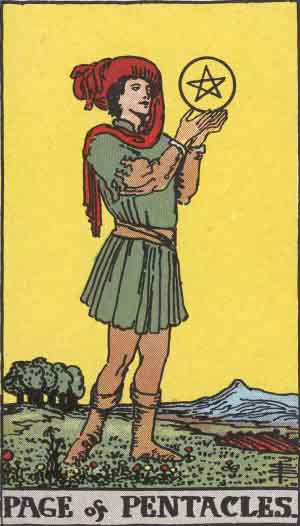

Main | Arcana | Cups | Pentacles | Swords | Wands
Page of Pentacles

Upright
Thirst for Knowledge, Grounded, Practical
- Learn new practical skills that directly apply to your life.
- Avoid being lost in your dreams. Collect yourself and your resources.
- Think clearly thru one path towards one plan. Have a specific goal in mind!
- Approach activities with a quality of fascination, of real involvement, caring less for rewards or social position than the work itself.
- Success is often determined by the attitude towards the work.
- Reflect everything as it is. Place your energy towards everything as it could be. Understand that reflection differs from dreams.
Reversed
Daydreaming, Delays
Exploring a new project? Review your goals and think about why you want to acheive them. Lighten up! Are you worried you don't have skills or resources? Trust you have what you need and trod on! Do you think you are trying too hard? Remember, this is supposed to be fun. Enjoy the daydream but take action! Learn from past mistakes. Look for new aspects of yourself. Be open-minded and curious.